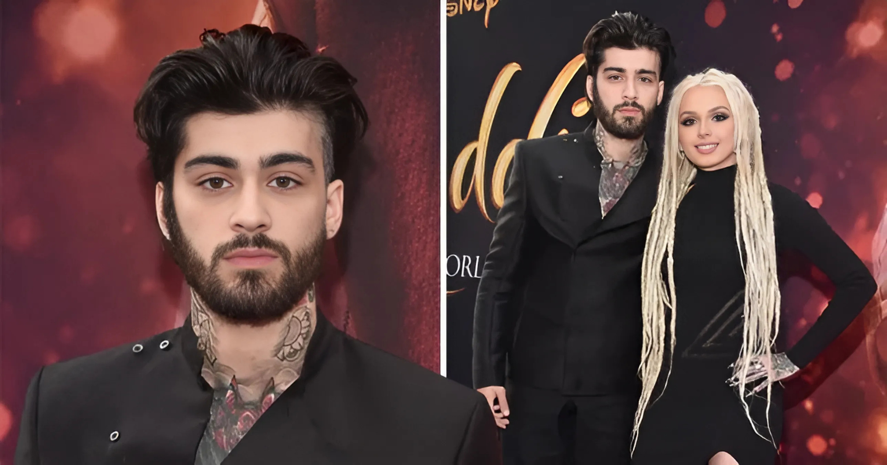

"Belajar HTML adalah seperti belajar bahasa baru. Semakin sering kamu berlatih, semakin mahir kamu akan menjadi. HTML mungkin terlihat sederhana, tapi dengan fondasi yang kuat, kamu bisa membangun situs web luar biasa. Jangan takut untuk berbuat kesalahan! Kesalahan adalah bagian dari proses belajar yang akan membantumu tumbuh. Ingat, setiap ahli pernah menjadi pemula. Keep coding, and let your creativity shine!" 💻🚀
Link Belajar Bahasa Pemrograman
W3SCHOOLS
Zayn Malik adalah seorang penyanyi dan penulis lagu asal Inggris yang dikenal luas setelah menjadi anggota boyband terkenal, One Direction, yang dibentuk melalui acara The X Factor UK pada tahun 2010. Pada tahun 2015, ia memutuskan untuk keluar dari grup dan berhasil memulai karir solo dengan merilis album pertamanya, Mind of Mine, yang langsung menduduki puncak tangga lagu. Dengan suara yang khas dan gaya yang unik, Zayn telah merilis beberapa lagu hits internasional seperti "Pillowtalk" dan "Dusk Till Dawn." Selain berkecimpung di industri musik, Zayn juga dikenal sebagai ikon fashion dan sering bekerja sama dengan berbagai merek ternama.
Salah satu kolaborasi menarik Zayn adalah ketika ia memberikan sentuhan modern pada lagu klasik Disney, "A Whole New World", untuk film Aladdin. Dalam versi ini, ia menyanyikannya bersama Zhavia Ward, menghadirkan nuansa pop yang lebih segar namun tetap menjaga inti keajaiban dari lagu aslinya. Suara khas Zayn yang lembut dan khas menambah dimensi emosional yang berbeda, membuat pendengar seolah merasakan petualangan magis Aladdin dan Jasmine. Dengan aransemen yang lebih kekinian, versi ini sukses menarik perhatian pendengar generasi baru dan sekaligus membangkitkan nostalgia bagi para penggemar setia Disney.

Zayn Malik lahir dalam sebuah keluarga dengan latar belakang yang kaya akan perbedaan budaya. Ibunya, Trisha Malik, berasal dari
Inggris, sementara ayahnya, Yaser Malik, adalah imigran dari Pakistan. Ia dibesarkan bersama satu kakak perempuan, Doniya Elisha Malik,
serta dua adik perempuan, Waliyha Azad Malik dan Safaa Malik, yang selalu mendukung karir musiknya sejak awal. Hubungan dekat Zayn
dengan keluarganya terlihat jelas, terutama melalui berbagai momen yang sering ia bagikan di media sosial. Dalam sebuah wawancara, Zayn
mengungkapkan, Dukungan keluarga merupakan salah satu faktor kunci di balik kesuksesanku.
Di samping hubungan keluarganya yang kuat, Zayn Malik juga memiliki kehidupan romantis yang menjadi perhatian publik, terutama saat menjalin
hubungan dengan model Gigi Hadid. Keduanya mulai berkencan pada tahun 2015, dan hubungan mereka sering kali menjadi sorotan media. Kehadiran
mereka di berbagai acara serta kolaborasi di dunia fashion dan seni semakin meningkatkan popularitas mereka sebagai pasangan. Pada bulan September
2020, Zayn dan Gigi dikaruniai seorang putri bernama Khai Hadid Malik, yang menjadi momen spesial bagi mereka. Sebagai orang tua baru, mereka kerap
menunjukkan kebahagiaan mereka, dan Zayn dalam beberapa wawancara mengungkapkan bahwa menjadi seorang ayah adalah pengalaman yang sangat
berharga baginya. Sayangnya, hubungan mereka berakhir pada tahun 2021. Meskipun demikian, mereka tetap saling menghormati dan berkomitmen untuk
memberikan yang terbaik bagi putri mereka. Keterbukaan Zayn mengenai perjalanan emosional dan tantangan yang dihadapinya menjadikannya sosok yang lebih
relatable di mata para penggemarnya.